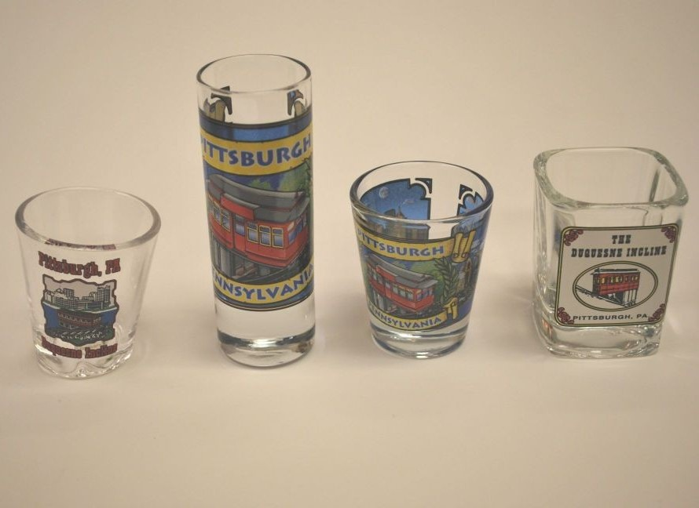
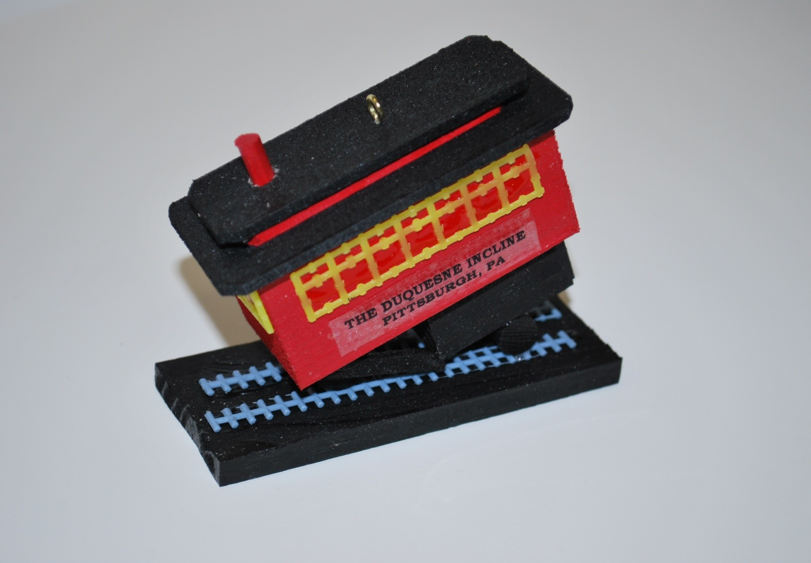
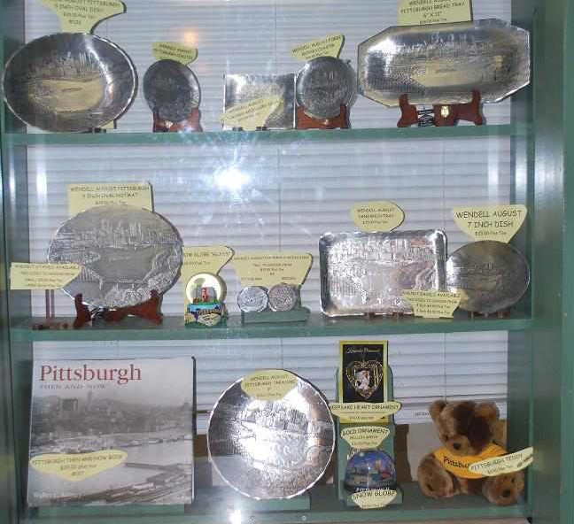

Take a step back in time on a century-old cable car and see the best views of downtown Pittsburgh while riding one of the few remaining inclines in the country.

Opened on May 20, 1877, the Duquesne Incline was rescued and restored by a group of local residents in 1963 and still
delights residents and visitors with its original, elegant, wooden cable cars. Now you can visit the interior of the incline and
watch the machinery while it operates.
The Duquesne Incline's upper station houses a museum of Pittsburgh history, including photos and a storehouse of
information on inclines from around the world. Unusual Pittsburgh souvenirs, maps and photos can be found at the gift shop.
Open 365 Days a Year
Everyday From: 6:30a.m.-12:30a.m.
No Reservations
No Advance Tickets
| Age | Price |
|---|---|
| Adults (Ages 12-64) | $2.50 Each Way or $5.00 Round Trip |
| Children (Ages 6-11) | $1.25 Each Way or $2.50 Round Trip |
| Children 5 and Under | Free |
|
University of Pittsburgh Students Carnegie Mellon Students Chatham University Students |
Free, with proper I.D. |
Many shot glasses are for sale including a slanted one
This handmade Incline wooden ornament is a big seller and is only available here
A full assortment of Wendell August Forge metal plates
